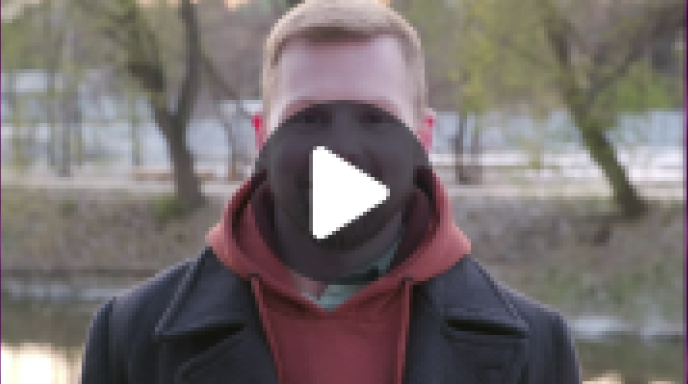

Støt Radar
Radar er en hjørnesten i Aarhus’ musikscene og har siden 2001 støttet vækstlaget, eksperimenterende musik og nichegenrer. Fra januar 2025 mister vi den offentlige støtte, der har sikret vores drift, og vi står over for en usikker fremtid.
Din støtte er afgørende for, at vi kan fortsætte som en platform for kreativitet og unikke koncertoplevelser. Sammen kan vi sikre, at Aarhus bevarer en stærk og mangfoldig musikscene.
Pengene går ubeskåret til støtte af kunstnere, Radars drift og events til jer.
Sådan støtter du Radar:
- Donér et valgfrit beløb og gør en direkte forskel for vores spillested. Klik blot på knappen nedenfor og bliv viderestillet til en sikker betalingsside.
- Få Radar+ som et medlemskab til kun 49 kr./md., hvor du får fordele som rabatter på billetter og adgang til unikke events, som kun er for medlemmer. Klik på knappen nedenfor og få Radar+.
Hør hvad andre siger:
Høre andre støtteres personlige historie om hvorfor de mener at det er vigtigt at støtte Radar, og hvad de får ud af det:
